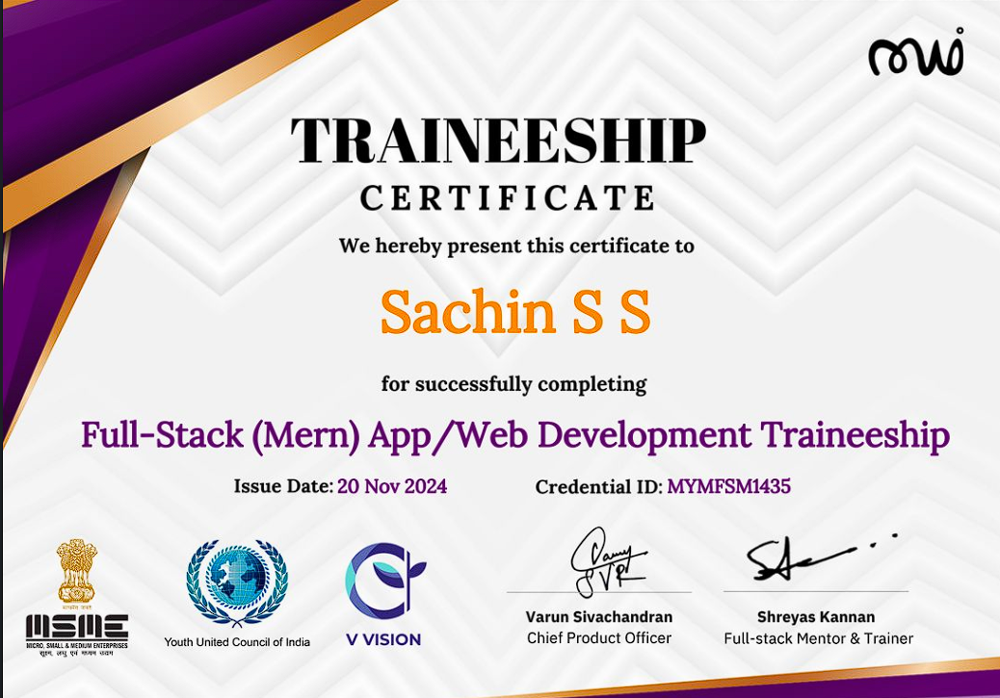
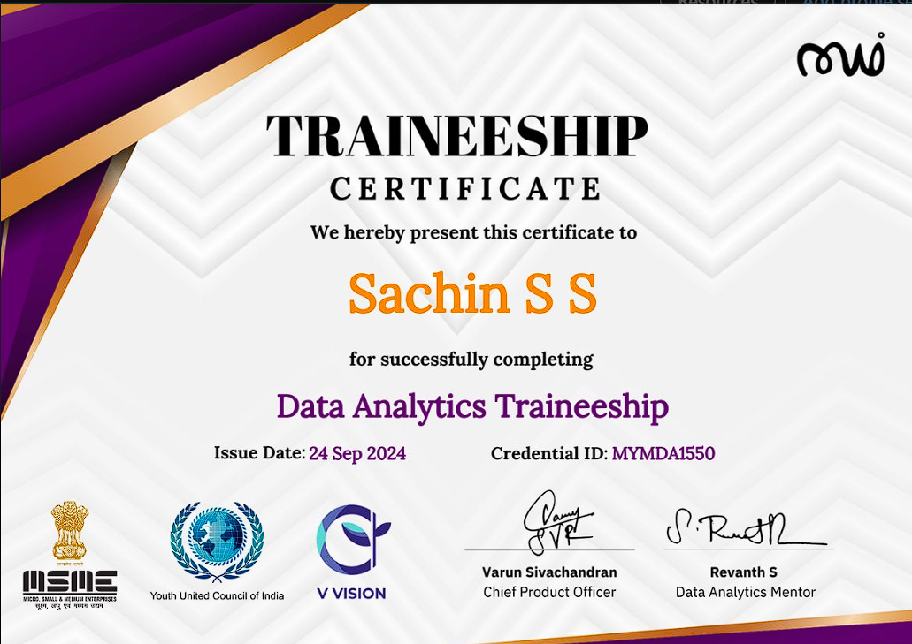

✅ Completed on Maiyyam under Revanth
Issued by MSME, Youth United Council of India, and V Vision.
🎉 Thrilled to announce the completion of my Data Analytics with MERN certification on the Maiyyam platform under Revanth! This journey deepened my skills in full-stack development while focusing on data visualization with Power BI. Excited to apply these powerful insights to real-world projects. 🙏

✅ Completed on Maiyyam under Shreyas Kannan and Varun Sivachandran
Issued by MSME, Youth United Council of India, and V Vision.
🎉 Excited to share that I have successfully completed a MERN Traineeship! This program provided hands-on experience in data analysis, empowering me with the skills to make data-driven decisions and gain insights using various analytics tools. Grateful for the guidance at Maiyyam! 💡